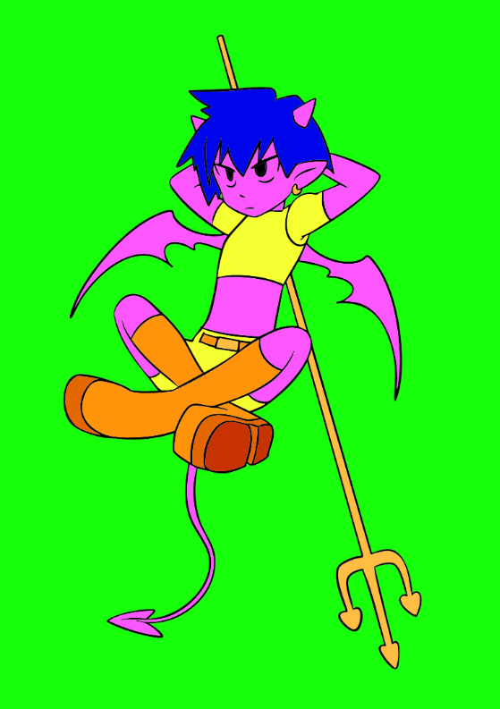
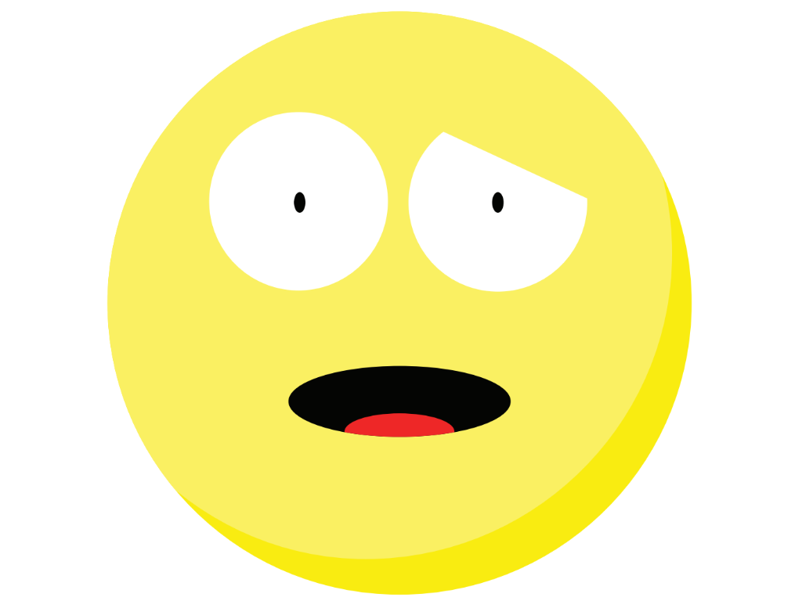
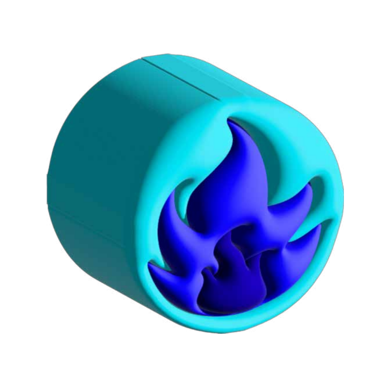
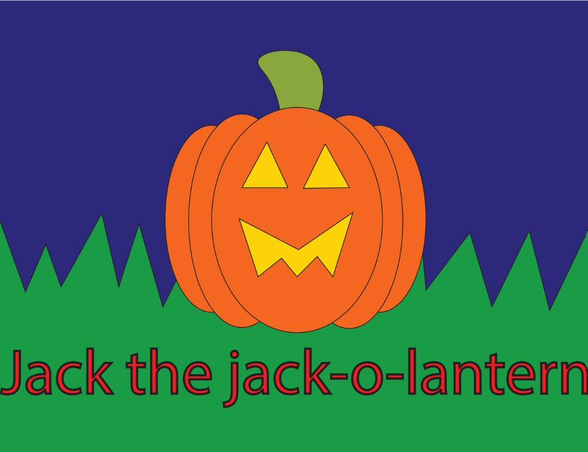
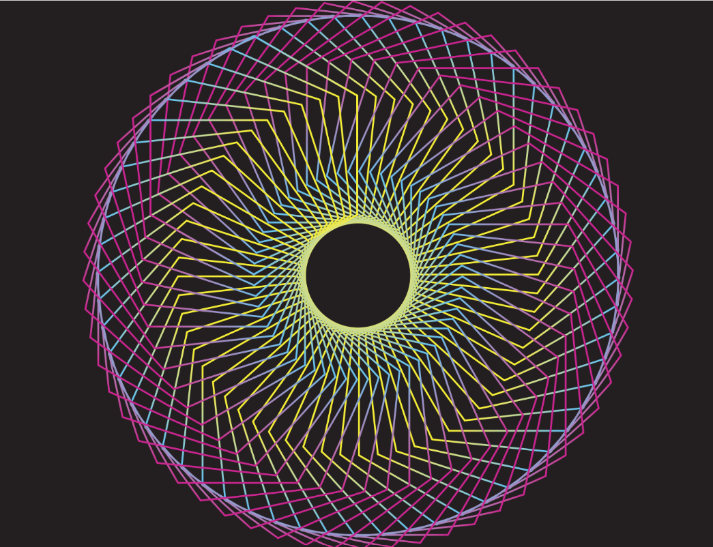
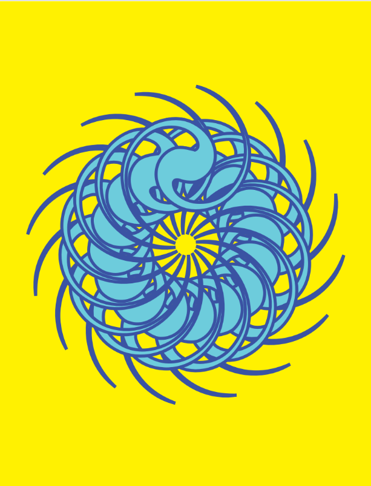
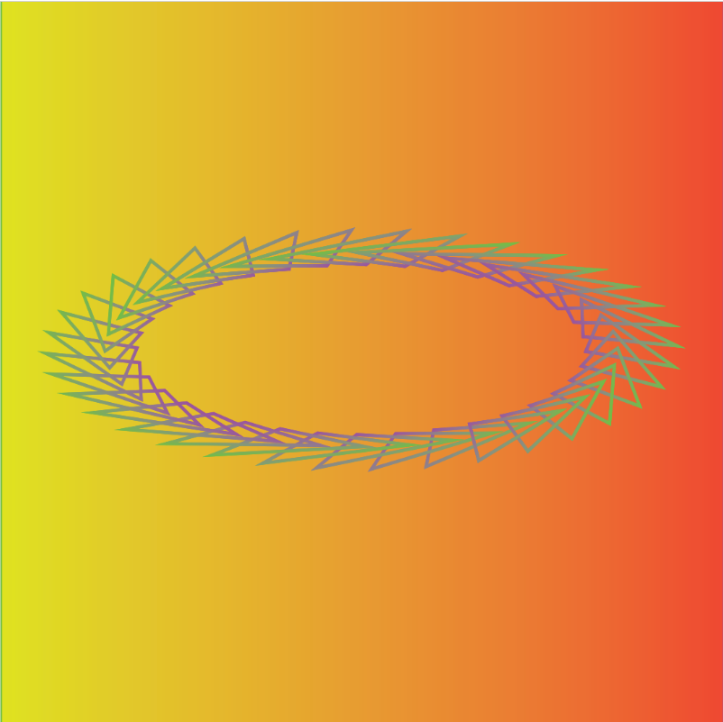
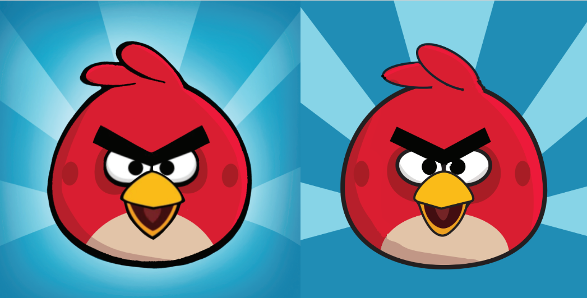

In this assignment, I had to colour in an image provided by my teacher.

In this assignment, I was tasked to create an Emoji.

This is a recoloured version of an image found on the internet.

This is a Halloween bonus I added to an assignment!



One assignment was to make 3 different patterns.

Lastly, this one made me recreate the red angrybird(The one on the right is the original, and the one on the left is mine).